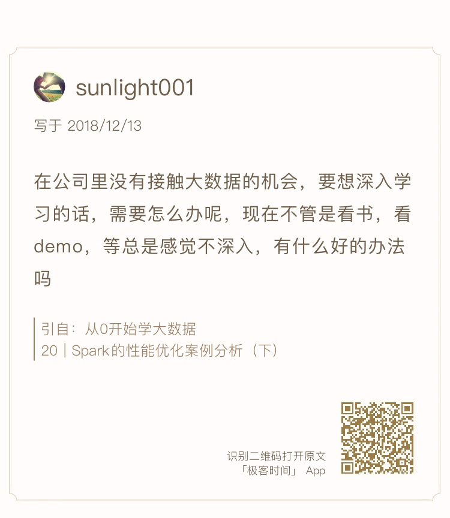
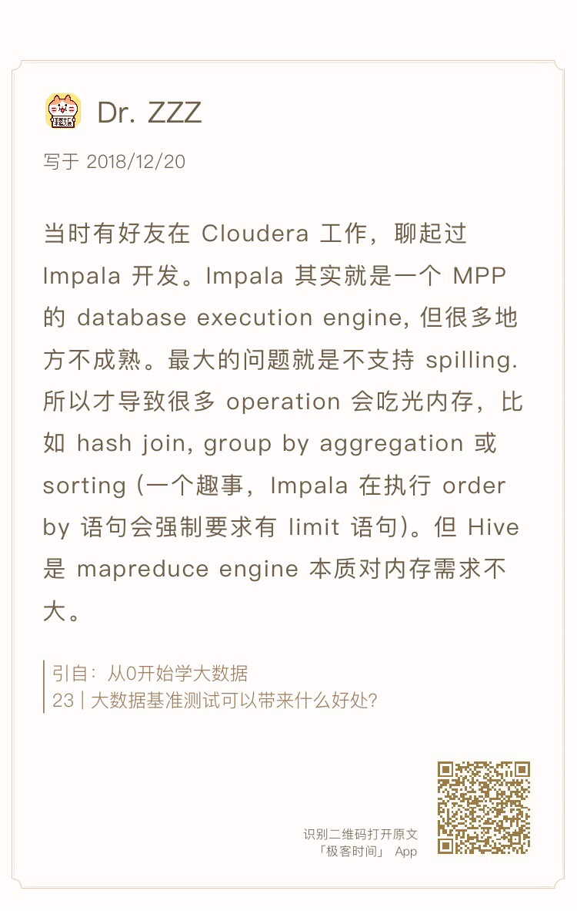

- 00 开篇词 为什么说每个软件工程师都应该懂大数据技术？.md.html
- 01 大数据技术发展史：大数据的前世今生.md.html
- 02 大数据应用发展史：从搜索引擎到人工智能.md.html
- 03 大数据应用领域：数据驱动一切.md.html
- 04 移动计算比移动数据更划算.md.html
- 05 从RAID看垂直伸缩到水平伸缩的演化.md.html
- 06 新技术层出不穷，HDFS依然是存储的王者.md.html
- 07 为什么说MapReduce既是编程模型又是计算框架？.md.html
- 08 MapReduce如何让数据完成一次旅行？.md.html
- 09 为什么我们管Yarn叫作资源调度框架？.md.html
- 10 模块答疑：我们能从Hadoop学到什么？.md.html
- 11 Hive是如何让MapReduce实现SQL操作的？.md.html
- 12 我们并没有觉得MapReduce速度慢，直到Spark出现.md.html
- 13 同样的本质，为何Spark可以更高效？.md.html
- 14 BigTable的开源实现：HBase.md.html
- 15 流式计算的代表：Storm、Flink、Spark Streaming.md.html
- 16 ZooKeeper是如何保证数据一致性的？.md.html
- 17 模块答疑：这么多技术，到底都能用在什么场景里？.md.html
- 18 如何自己开发一个大数据SQL引擎？.md.html
- 19 Spark的性能优化案例分析（上）.md.html
- 20 Spark的性能优化案例分析（下）.md.html
- 21 从阿里内部产品看海量数据处理系统的设计（上）：Doris的立项.md.html
- 22 从阿里内部产品看海量数据处理系统的设计（下）：架构与创新.md.html
- 23 大数据基准测试可以带来什么好处？.md.html
- 24 从大数据性能测试工具Dew看如何快速开发大数据系统.md.html
- 25 模块答疑：我能从大厂的大数据开发实践中学到什么？.md.html
- 26 互联网产品 + 大数据产品 = 大数据平台.md.html
- 27 大数据从哪里来？.md.html
- 28 知名大厂如何搭建大数据平台？.md.html
- 29 盘点可供中小企业参考的商业大数据平台.md.html
- 30 当大数据遇上物联网.md.html
- 31 模块答疑：为什么大数据平台至关重要？.md.html
- 32 互联网运营数据指标与可视化监控.md.html
- 33 一个电商网站订单下降的数据分析案例.md.html
- 34 A_B测试与灰度发布必知必会.md.html
- 35 如何利用大数据成为“增长黑客”？.md.html
- 36 模块答疑：为什么说数据驱动运营？.md.html
- 37 如何对数据进行分类和预测？.md.html
- 38 如何发掘数据之间的关系？.md.html
- 39 如何预测用户的喜好？.md.html
- 40 机器学习的数学原理是什么？.md.html
- 41 从感知机到神经网络算法.md.html
- 42 模块答疑：软件工程师如何进入人工智能领域？.md.html
- 所有的不确定都是机会——智慧写给你的新年寄语.md.html
- 第2季回归丨大数据之后，让我们回归后端.md.html
- 结束语 未来的你，有无限可能.md.html
- 捐赠
25 模块答疑：我能从大厂的大数据开发实践中学到什么？
你好，我是李智慧，又到了我们模块答疑的时间了。在这个模块里，我主要讲了大数据开发的实践，所以今天我想和你聊聊我在大厂里学到哪些经验。
软件编程大体上可以分成两种，一种是编写的程序直接供最终用户使用，针对用户需求进行开发，可以说绝大多数工程师开发的绝大多数程序都属于这一种；还有一种是编写的程序供其他工程师使用，大到全球通用的各种编程语言、编程框架、虚拟机、大数据系统，小到公司内部，甚至团队内部自己开发的各种工具、框架，以及应用系统内的非业务模块，都是属于这一种。
一般说来，后一种编程因为输出的程序要给其他工程师使用，接受专业同行的审视，而且被复用的次数更多，更偏向底层，所以通常技术难度更高一点，开发这样的软件对工程师的技能提升也更高一点。技术产品难度有难易之分，正如工程师水平也分高下，但是两者之间却没有必然联系。
这些年，我在各种不同的公司工作过，在几个人的小作坊开发过只有几个人使用的所谓ERP系统，也在所谓的大厂参与过全球顶级的大数据系统的开发，据我所见，优秀的人哪里都有，大厂里优秀工程师更多一些，但是小作坊里有时候也卧虎藏龙。
导致工程师技术水平不同的不在于是大厂还是小作坊，大厂里有十几年如一日拧螺丝钉的人，在一个极其狭窄的技术产品里重复技术细节的工作，对这些年的技术进步几乎一无所知；小作坊也有自己开发整套技术框架的人，虽说是重复造轮子，但是因为造过，所以对软件开发的关键技术和架构设计有更深刻的领悟，软件设计能力和编程技巧通常也更胜一筹。
如果你有机会在大厂参与核心产品的开发固然好，如果没有，也大可不必遗憾，决定你技术水平和发展前景的最主要因素，不在于公司，而在于你所做的事。小厂因为人少事多，所以你反而可能有更多机会开发一些有技术难度的软件，比如为提高开发效率而给其他工程师开发一些工具，或者为公司开发一些框架供所有项目使用。
但是这些有技术难度的软件，能让你提高技术水平获得更好成长空间的开发工作，通常又不被公司重视，因为小公司做业务尚且忙不过来，去开发什么工具、框架，在老板看来简直是不务正业。而老板也很难慧眼识珠，安排你去做这些看起来不那么要紧的事。所以你需要自己去争取机会，有时候甚至要用自己的业余时间去做，等有了初步效果，能真正提高公司的效率后，你也会得到更多信任和机会去专门持续进行基础技术产品的开发。
大数据技术领域因为通常不用直接满足最终用户的需求，所以大数据开发者有更多机会去做一些底层技术方面的开发工作，比如开发大数据平台整合公司的数据和各类系统；开发数据爬虫获取外部的数据资源；开发ETL工具转换公司的各类数据，这些技术也是专栏下一个模块的主要内容。通过开发这些软件，一方面可以更好地利用大数据技术实现业务价值，另一方面对自身的技术水平提升也大有帮助。
前面我说过，身在大厂并不会保证你一定能参与开发有技术含量的产品，更不能保证你的技术能力一定会得到提升。但是我自己在阿里巴巴、在Intel工作时还是学到了很多，前面专栏分享的很多内容，都是我在这些地方学习到的。这里我再和你分享一个我在Intel学到的关于学习的方法。
在Intel之前，我学习技术主要就是从网上搜索各种乱七八糟的资料，有的时候运气好，资料比较好，学习的速度和掌握的深度就好一些；有时候运气差，就会走很多弯路。但是在Intel，我发现一些比较厉害的同事，他们学习一样新技术的时候，不会到处乱找资料，而是直接读原始论文。通过原始论文掌握核心设计原理以后，如果需要进一步学习，就去官网看官方文档；如果还需要再进一步参与开发，就去读源代码。
我刚开始读论文时感觉很费劲，但是后面习惯以后，发现读论文真的是最快的学习方法，因为最核心的东西就在其中，一旦看懂，就真的懂了，而且可以触类旁通，整个软件从使用到开发，很多细节通过脑补就可以猜个八九不离十。而且越是优秀的产品，越是厉害的作者，论文反而越是容易读懂，可能是因为这些作者是真的高手，自己理得越清楚，写出来的论文越是脉络清晰、结构合理、逻辑严谨。
后来在学习区块链的时候，读原始论文很快就理解了个中关键，反而在跟一些所谓“资深”区块链人士交流的时候，发现他们在一些关键细节上常常犯迷糊，我就感到很诧异，中本聪、布特林在他们的论文中不是说得很清楚嘛。
下面我顺着今天的话题，来回答一下“sunlight001”同学的问题。

我认为，软件开发是一个实践性活动，不管是学习还是应用，最终都需要落到实践中。大数据技术也不例外，没有实践，就不可能深入，想要学好大数据，一定要实践。
而实践可以分为几个不同的层次。
第一个层次是练习实践，我的专栏剖析架构原理居多，这是专栏定位决定的，而且学习大数据真正的难度，或者说决定你技术高度的依然是你是否理解了大数据技术的核心原理。但是大数据的学习一定要配合练习实践，不管是Hadoop、Spark、Hive的部署，还是编程练习实践，网上的教程都有很多，step by step入门学习的资料也很多。通过这些练习实践，结合专栏的原理分析，可以由表及里，从如何上手操作，到理解背后的原理机制，最后能够做到融会贯通。我看到专栏评论里很多同学贴了代码上来，一边学习一边实践，我们向这些同学学习。
通过练习实践和原理学习，掌握的是大数据技术的核心关键，真正对一个技术的掌握是需要掌握其细节，没有经过时间的积累，没有在应用中踩过各种坑、遇到各种挑战，没有对各种大数据技术思考再思考、研究再研究，就不可能掌握细节。所以，大数据实践的第二个层次是应用实践，在应用中解决问题，在实践中训练自己。
关于公司没有接触大数据的机会，一般是两种情况，公司没有用大数据，或者公司用大数据技术，但是你接触不到。对于前一种情况，大数据的价值已经成为普遍共识，你要想办法给老板献计献策，同时在同事间鼓吹大数据的好处，让老板关注大数据、使用大数据。如果最后老板决定使用大数据，那么他想到的第一个应该就是你，你的机会也就来了。
对于后一种情况，如果你已经经过前面的学习和练习实践，掌握了一定的大数据技术知识，申请转岗也可以，在自己的项目中引入大数据和大数据团队展开更多合作也可以，具体也会有很多办法获得应用实践的机会。
大数据实践的第三个层次是开发实践，大数据产品开发有两种，一种是重新开发，比如前面讲过的Doris、Dew，自己从头设计开发一个大数据系统，这样对学习的好处是可以更深刻、更全面理解大数据。另一种就是参与开源大数据产品的开发，比如前面讲过的Spark源码优化，这样的好处是可以和全世界最顶级的工程师一起讨论问题，通过交流学习提高。我在参与Spark开发的时候，跟Databricks、Cloudera的工程师交流，这些人可能是大数据技术领域最顶级的工程师，跟他们交流收获最深刻的不是技术，而是对他们技术水平的判断，以及进而对自己技术水平的判断，并因此促使自己思考自己未来的技术发展之路与人生之路。
最后我想说的是，这个世界不是为你而存在的，别人根本不会在乎你的感受和你的问题，不会把你想要的东西装在精美的礼盒里打上蝴蝶结送到你的面前，也不会因为你想学习大数据而给你一个实践的机会。不过这样也好，你也不必在乎这个世界怎么看你，只要你想要，你就可以拼尽全力为自己去争取，你要为自己创造机会。
文章最后，我将Dr.ZZZ、纯洁的憎恶、吴科、galen这几位同学的留言，贴在今天的文稿里分享给你，希望同学们的思考也能对你有所启发。
 


如果你身边也有感到迷茫困惑的朋友，欢迎你点击“请朋友读”，把今天的文章分享给好友。也欢迎你写下自己的思考或疑问，与我和其他同学一起讨论。
© 2019 - 2023 Liangliang Lee. Powered by gin and hexo-theme-book.